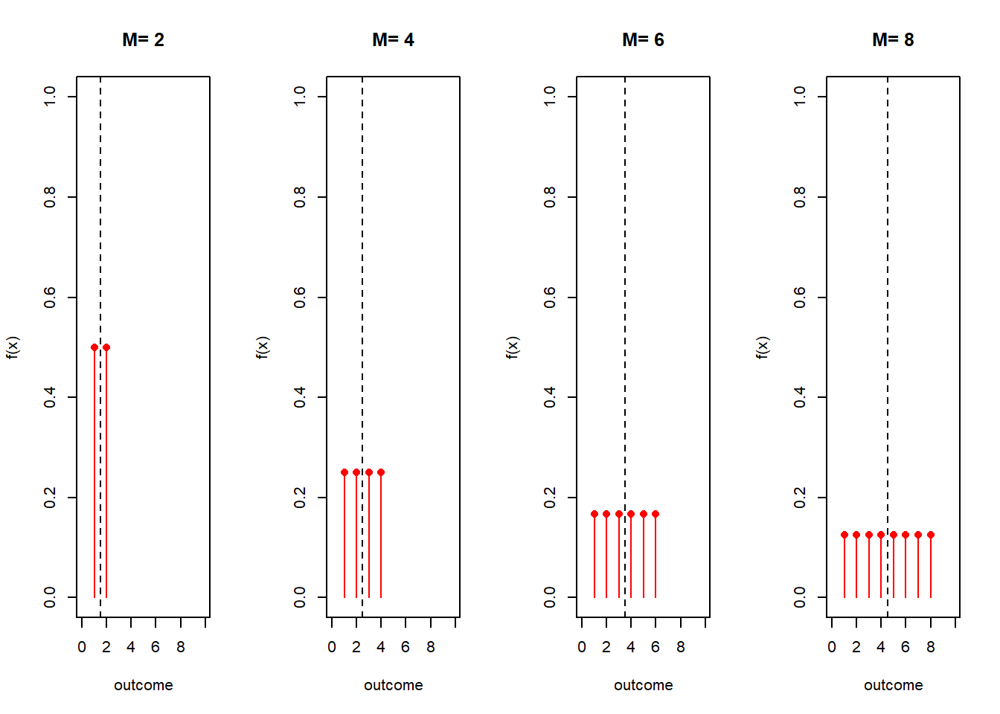
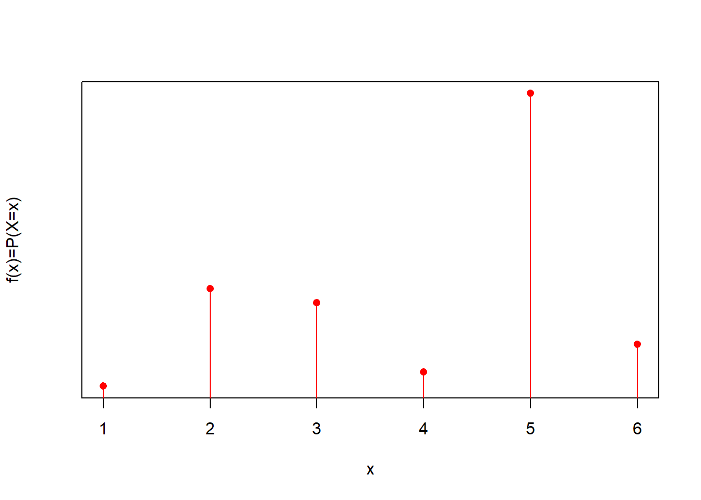
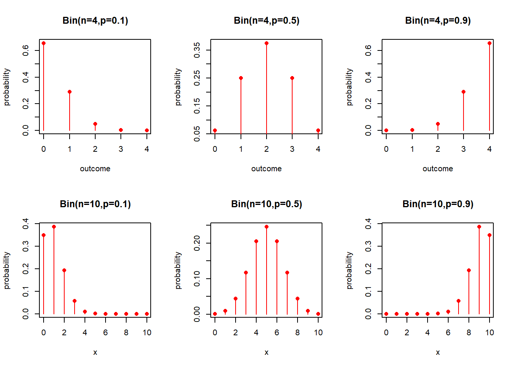
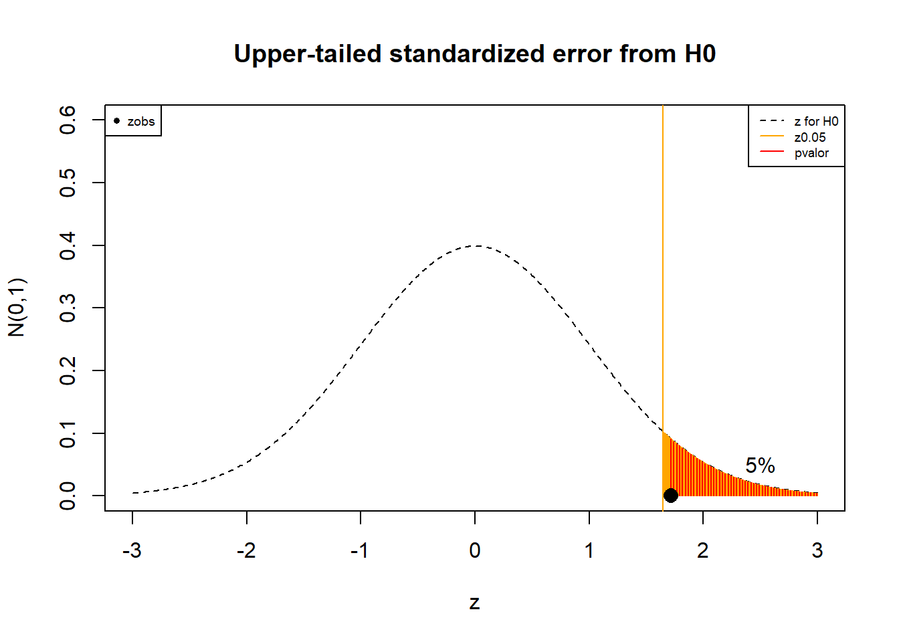

Chapter 7 Discrete Probability Models
7.1 Objective
In this chapter we will see some probability mass functions that are used to describe common random experiments.
We will introduce the concept of parameter and thus parametric models.
In particular, we will discuss the uniform and Bernoulli probability functions and how they are used to derive the binomial and negative binomial probability functions.
7.2 Probability mass function
Let us remenber that a probability mass function of a discrete random variable \(X\) with possible values \(x_1 , x_2 , .. , x_M\) is any function such that
- It Allows us to compute probabilities for all outcomes
\[f(x_i)=P(X=x_i)\]
- It is always positive:
\[f(x_i)\geq 0\]
- The probability of of obtaining anything in the random experiment is \(1\)
\[\sum_{i=1}^M f(x_i)=1\]
We studied two important properties:
- The mean as a measure of central tendency:
\[E(X)= \sum_{i=1}^M x_i f(x_i)\]
- The variance as a measure of dispersion:
\[V(X)= \sum_{i=1}^M (x_i-\mu)^2 f(x_i)\]
7.3 Probability model
A probability model is a probability mass function that may represent the probabilities of a random experiment.
Examples:
- The probability mass function defined by
| \(X\) | \(f(x)\) |
|---|---|
| \(-2\) | \(1/8\) |
| \(-1\) | \(2/8\) |
| \(0\) | \(2/8\) |
| \(1\) | \(2/8\) |
| \(2\) | \(1/8\) |
Represents the probability of drawing one ball from an urn where there are two balls with labels: \(-1, 0, 1\) and one ball with labels: \(-2, 2\).
- \(f(x)=P(X=x)=1/6\) represents the probability of the outcomes of one throw of a dice.
7.4 Parametric models
When we have a random experiment with \(M\) possible outcomes, we need to find \(M\) numbers to determine the probability mass function. As in the previous example 1, we needed \(5\) values in the column \(f(x)\) of the probability table.
However, in many cases, we can formulate probability functions \(f(x)\) that depend on very few numbers only. As in the previous example 2, we only needed to know how many possible outcomes the throw of a dice has.
Example (classical probability):
A random experiment with \(M\) equally likely outcomes has a probability mass function: \[f(x)=P(X=x)=1/M\]
We only need to know \(M\).
The numbers we need to know to fully determine a probability function are called parameters.
7.5 Uniform distribution (one parameter)
The previous example is the classical interpretation of probability, and defines our first parametric model.
Definition
A random variable \(X\) with outcomes \(\{1,...M\}\) has a discrete uniform distribution if all its \(M\) outcomes have the same probability
\[f(x)=\frac{1}{M}\]
\(M\) is the natural parameter of the model. Once we define \(M\) for an experiment, we choose a particular probability mass function. The function above is really a family of functions that depend on \(M\): \(f(x; M)\).
The mean and variance of a variable that follows a uniform distribution are:
\[E(X)= \frac{M+1}{2}\]
and
\[V(X)= \frac{M^2-1}{12}\]
Note: \(E(X)\) and \(V(X)\) are also parameters. If we know any of them then we can fully determine the distribution. For instance:
\[f(x)=\frac{1}{2E(X)-1}\] Let’s look at some probability mass functions in the family of uniform parametric models:

7.6 Uniform distribution (two parameters)
Let’s introduce a new uniform probability model with two parameters: The minimum and maximum outcomes.
If the random variable takes values in \(\{a, a+1, ...b\}\), where \(a\) and \(b\) are integers and all the outcomes are equally probable then
\[f(x)=\frac{1}{b-a+1}\]
as \(M=b-a+1\).
We then say that \(X\) distributes uniformly between \(a\) and \(b\) and write
\[X \rightarrow Unif(a,b)\]
Properties:
If \(X\) distributes uniformly between \(a\) and \(b\)
\[X \rightarrow Unif(a,b)\]
- Its mean is
\[E(X)= \frac{b+a}{2}\]
- Its variance is
\[V(X)= \frac{(b-a+1)^2-1}{12}\]
To prove this change variables \(X=Y+a-1\), \(y \in \{1,...M\}\).
Probability mass functions
Let’s look at some probability mass functions in the family of uniform parametric models:

Example (school classes):
What is the probability of observing a child of a particular age in a primary school (if all classes have the same amount of children)?
From the set up of the experiment we know: \(a=6\) and \(b=11\) then
\[X \rightarrow Unif(a=6, b=11)\] that is
\[f(x)=\frac{1}{6}\] for \(x\in \{6,7,8,9,10,11\}\), and \(0\) otherwise.
The mean and variance for this probability mass function is:
- \(E(X)=8.5\)
- \(V(X)=2.916667\)
Remember that
The expected value is the mean \(\mu=8.5\)
The standard deviation \(\sigma=1.707825\) is the average distance from the mean and is computed from the square root of the variance.

Parameters and Models:
A model is a particular function \(f(x)\) that describes our experiment.
If the model is a known function that depends on a few parameters then changing the value of the parameters we produce a family of models: \(f(x; a,b)\).
Knowledge of \(f(x)\) is reduced to the knowledge of the value of the parameters \(a\), \(b\).
Ideally, the model and the parameters are interpretable.
In our example, \(a\) represents the the minimum age at school and \(b\) the maximum age. They can be considered as the physical properties of the experiment.
7.7 Bernoulli trial
Let’s try to advance from the equal probability case and suppose a model with only two possible outcomes (\(A\) and \(B\)) that have unequal probabilities
Examples:
Writing down the sex of a patient who goes into an emergency room of a hospital (\(A:male\) and \(B:female\)).
Recording whether a manufactured machine is defective or not (\(A:defective\) and \(B:not \,\, defective\)).
Hitting a target (\(A:success\) and \(B:failure\)).
Transmitting one pixel correctly (\(A:yes\) and \(B:no\)).
In these examples, the probability of outcome \(A\) is usually unknown.
Probability model:
We will introduce the probability of an outcome (\(A\)) as the parameter of the model. The model can be written in different forms
- As a probability table:
| \(Outcome\) | \(P_i\) |
|---|---|
| \(A\) | \(p\) |
| \(B\) | \(1-p\) |
- \(i \in \{A,B\}\)
- outcome A (success): has probability \(p\) (parameter)
- outcome B (failure): has a probability \(1-p\)
- As a probability mass function of the random variable \(K\) taking values \(\{0, 1\}\) for \(B\) and \(A\), respectively.
\[ f(k)= \begin{cases} 1-p,& k=0\, (event\, B)\\ p,& k=1\, (event\, A) \end{cases} \]
- As a concise probability mass function
\[f(k; p)=p^k(1-p)^{1-k} \]
for \(k=(0,1)\).
We then say that \(X\) follows a Bernoulli distribution with parameter \(p\) \[X \rightarrow Bernoulli(p)\]
Properties:
If \(X\) follows a Bernoulli distribution then
- its mean is
\[E(K)=p\]
- its variance is
\[V(K)=(1-p)p\]
Note that the probability of the outcome \(A\) is the parameter \(p\) which is the same as its value at \(1\): \(f(1)=P(X=1)\). The parameter fully determines the probability mass function, including its mean and variance.
Let’s look at some probability mass functions in the family of uniform parametric models:

7.8 Binomial experiment
When we are interested in predicting absolute frequencies when we know the parameter \(p\) of particular Bernoulli trial, we
repeat the Bernoulli trial \(n\) times and count how many times we obtained \(A\) using the absolute frequency of \(A\): \(N_A\).
define a random variable \(X=N_A\) taking values \(x \in {0,1,...n}\)
When we repeat \(n\) times a Bernoulli trial, we obtain one value for \(n_A\). If perform another \(n\) Bernoulli trials then \(n_A\) gives another value. \(N_A=X\) is the random variable, \(n_A=x\) is its observation.
Example (Binomial experiment):
Here is a repetition of a Binomial experiment \(5\) times. Each Binomial experiment is the repetition of a Bernoulli trial \(n=10\) times. In each Binomial experiment we obtained a different value of \(x\) that measures the relative frequency of \(A\). In this experiments we want to predict the value of \(X\), that is asking for the probability of specific events (for instance \(X=9\)).

Examples (Binomial experiments in context):
Writing down the sex of \(n=10\) patients who go into an emergency room of a hospital. What is the probability that \(X=9\) patients are men when \(p=0.8\)?
Trying \(n=5\) times to hit a target (\(A:success\) and \(B:failure\)). What is the probability that I hit the target \(X=5\) times when I usually hit it \(25\%\) of the times (\(p=0.25\))?
Transmitting \(n=100\) pixels correctly (\(A:yes\) and \(B:no\)). What is the probability that \(X=2\) pixels are errors, when the probability of error is \(p=0.1\)?
7.9 Binomial probability function
Let us suppose that we know the real value of the parameter of the Bernoulli trial \(p\) (\(lim_{n\rightarrow \infty} x=np\)).
When we repeat a Bernoulli trial and stop at \(n\), is the value \(x\) that we obtain common or rare? what is its probability mass function \(P(X=x)=f(x)\)?
Example (transmission of pixels):
What is the probability of observing \(X=x\) errors when transmitting \(n=4\) pixels, if the probability of an error is \(p\)?
Let us consider that
A random variable of the transmission experiment is the vector \[(K_1, K_2, K_3, K_4)\] where one observation may be \((K_1=0, K_2=1, K_3=0, K_4=1)\) or \((0, 1, 0, 1)\).
Each \[K_i \rightarrow Bernoulli(p)\] \(k_i \in \{0, 1\}\)
\(X=N_A\) can be computed as the sum \[X=\sum_{i=1}^4 K_i\] \(x\in \{0,1,2,3,4\}\). For example \(X=2\) for the outcome \((0, 1, 0, 1)\).
Now let’s see the probabilities of some error events and then we will generalize them.
- What is the probability of observing \(4\) errors?
The probability of observing \(4\) errors is the probability of observing an error in the \(1^{st}\) and \(2^{nd}\) and \(3^{rd}\) and \(4^{th}\) pixel:
\[P(X=4)=P(1,1,1,1)=p*p*p*p=p^4\]
because \(K_i\) are independent.
- What is the probability of observing \(0\) errors?
The probability of \(0\) errors is the joint probability of observing no error in any transmission:
\[P(X=0)=P(0,0,0,0)=(1-p)(1-p)(1-p)(1-p)=(1-p)^4\]
- What is the probability of observing \(3\) errors?
The probability of \(3\) errors is the addition of probability of observing \(3\) errors in different events:
\[P(X=3)=P(0,1,1,1)+P(1,0,1,1)+P(1,1,0,1)+P(1,1,1,0)=4p^3(1-p)^1\] because all off these events are mutually exclusive.
- Therefore the probability of \(x\) errors is
\[ f(x)= \begin{cases} 1*p^0(1-p)^4,& x=0 \\ 4*p^1(1-p)^3,& x=1 \\ 6*p^2(1-p)^2,& x=2 \\ 4*p^3(1-p)^1,& x=3 \\ 1*p^4(1-p)^0,& x=4 \\ \end{cases} \]
or more shortly
\[f(x)=\binom 4 x p^x(1-p)^{4-x}\] for \(x=0,1,2,3,4\)
where \(\binom 4 x\) is the number of possible outcomes (transmissions of \(4\) pixels) with \(x\) errors.
Definition:
The binomial probability function is the probability mass function of observing \(x\) outcomes of type \(A\) in \(n\) independent Bernoulli trials, where \(A\) has the same probability \(p\) in each trial.
The function is given by
\(f(x)=\binom n x p^x(1-p)^{n-x}\), \(x=0,1,...n\)
\(\binom n x= \frac{n!}{x!(n-x)!}\) is called the binomial coefficient and gives the number of ways one can obtain \(x\) events of type \(A\) in a set of \(n\).
When a variable \(X\) has a binomial probability function we say it distributes binomially and write
\[X\rightarrow Bin(n,p)\]
where \(n\) and \(p\) are parameters.
Let’s look at some probability mass functions in the family of binomial parametric models:

Properties:
If a random variable \(X\rightarrow Bin(n,p)\) then
- its mean is
\[E(X)=np\]
- its variance is
\[V(X)=np(1-p)\]
These properties can be demonstrated by the fact that \(X\) is the sum of \(n\) independent Bernoulli variables. Therefore,
\(E(X)=E(\sum_{i=1}^n K_i)=np\)
and
\(V(X)=V(\sum_{i=1}^n K_i)=n(1-p)p\)
Example (transmission of pixels):
The expected value for the number of errors in the transmission of \(4\) pixels is \(np=4*0.1=0.4\) when the probability of an error is \(0.1\).
The variance is \(n(1-p)p=0.36\)
What is the probability of observing \(4\) errors?
Since we are repeating a Bernoulli trial \(n=4\) times and counting the number of events of type \(A\) (errors), when \(P(A)=p=0.1\) then
\[X \rightarrow Bin(n=4, p=0.1)\] That is \[f(x)=\binom 4 x 0.1^x(1-0.1)^{4-x}\]
\(P(X=4)=f(4)=\binom 4 4 0.1^4 0.9^{0}=0.1^4=10^{-4}\)
In R dbinom(4,4,0.1)
- What is the probability of observing \(2\) errors?
\(P(X=2)=\binom 4 2 0.1^2 0.9^2=0.0486\)
In R dbinom(2,4,0.1)
Example (opinion polls):
- What is the probability of observing at most \(8\) voters of the ruling party in an election poll of size \(10\), if the probability of a positive vote for the party is \(0.9\)
For this case
\[X \rightarrow Bin(n=10, p=0.9)\]
That is \[f(x)=\binom {10} x 0.9^x(0.1)^{4-x}\]
We want to compute: \(P(X\le 8)=F(8)= \sum_{i=1..8} f(x_i)=0.2639011\)
in R pbinom(8,10, 0.9)
7.10 Negative binomial probability function
Now let us imagine that we are interested in counting the well-transmitted pixels before a given number of errors occur. Say we can tolerate \(r\) errors in transmission.
Our random experiment is now: Repeat Bernoulli trials until we observe the outcome \(A\) appears \(r\) times.
The outcome of the experiment is the number of events \(n_B=y\)
We are interested in finding the probability of observing a particular number of events \(B\), \(P(Y=y)\), where \(Y=N_B\) is the random variable.
Example (transmission of pixels):
What is the probability of observing \(y\) well-transmitted (\(B\)) pixels before \(r\) errors (\(A\))?
Let’s first find the probability of one particular transmission event with \(y\) number of correct pixels (\(B\)) and \(r\) number of errors (\(A\)).
\[(0,0,1,., 0,1,...0,1)\]
where we consider that there are \(y\) zeros and \(r\) ones. Therefore, we observe \(y\) correct pixels in a total of \(y + r\) pixels.
The probability of this event is:
\[P(0,0,1,., 0,1,...0,1)=p^r(1-p)^y\]
Remember that \(p\) is the probability of error (\(A\)).
How many transmissions events can have \(y\) correct pixels (0’s) before \(r\) errors (1’s)?
Note that
The last bit is fixed (marks the end of transmission)
The total number of ways in which \(y\) number of zeros can be allocated in \(y + r-1\) pixels (the last pixel is fixed with value 1) is: \(\binom {y + r-1} y\)
Therefore, the probability of observing \(y\) 1’s before \(r\) 0’s (each 1 with probability \(p\)) is
\[P(Y=y)=f(y)=\binom {y+r-1} y p^r(1-p)^y\]
for \(y=0,1,...\)
We then say that \(Y\) follows a negative binomial distribution and we write
\[Y\rightarrow NB(r,p)\]
where \(r\) and \(p\) are parameters representing the tolerance and the probability of a single error (event \(A\)).
Properties:
A random variable \(Y\rightarrow NB(r,p)\) has
mean \[E(Y)= r\frac{1-p}{p}\]
and variance \[V(Y)= r\frac{1-p}{p^2}\]
Let’s look at some probability mass functions in the family of negative binomial parametric models:

Example (website)
A website has three servers. One server operates at a time and only when a request fails another server is used.
If the probability of failure for a request is known to be \(p=0.0005\) then
- what is the expected number of successful requests before the three computers fail?
Since we are repeating a Bernoulli trial until \(r=3\) events of type \(A\) (failure) are observed (each with \(P(A)=p=0.0005\)) and are counting the number of events of type \(B\) (successful requests) then
\[Y \rightarrow NB(r=3, p=0.0005)\]
Therefore, the expected number of requests before the system fails is:
\(E(Y)=r\frac{1-p}{p}=3\frac{1-0.0005}{0.0005}=5997\)
Note that there are actually \(6000\) trials.
- What is the probability of dealing with at most \(5\) successful requests before the system fails?
We therefore want to compute the probability distribution at \(5\):
\(F(5)=P(Y\leq 5)=\Sigma_{y=0}^5 f(y)\)
\(=\sum_{y=0}^5\binom {y+2} y 0.0005^r0.9995^y\)
\(=\binom {2} 0 0.0005^3 0.9995^0 +\binom {3} 1 0.0005^3 0.9995^1\)
\(+\binom {4} 2 0.0005^3 0.9995^2 +\binom {5} 3 0.0005^3 0.9995^3\)
\(+\binom {6} 4 0.0005^3 0.9995^4 +\binom {7} 5 0.0005^3 0.9995^5\)
\(= 6.9\times 10^{-9}\)
In R this is computed with pnbinom(5,3,0.0005)
Examples
- What is the probability of observing \(10\) correct pixels before \(2\) errors, if the probability of an error is \(0.1\)?
\(f(10; r=2, p=0.1)=0.03835463\)
in R dnbinom(10, 2, 0.1)
- What is the probability that \(2\) girls enter the class before \(4\) boys if the probability that a girl enters is \(0.5\)?
\(f(2; r=4, p=0.5)=0.15625\)
in R dnbinom(2, 4, 0.5)
7.11 Geometric distribution
We call geometric distribution to the negative binomial distribution with \(r=1\)
The probability of observing \(B\) events before observing the first event of type \(A\) is
\[P(Y=y)=f(y)= p(1-p)^y\]
\[Y\rightarrow Geom(p)\] which has
mean \[E(Y)= \frac{1-p}{p}\]
and variance \[V(Y)= \frac{1-p}{p^2}\]
7.12 Hypergeometric model
The hypergeometric model arises when we want to count the number of events of type \(A\) that are drawn from a finite population.
The general model is to consider \(N\) total balls in a urn. Mark \(K\) with label \(A\) and \(N-K\) with label \(B\). Take out \(n\) balls one by one with no replacement in the urn, and then count how many \(A\)’s you obtained.
The Binomial model can be derived from the Hypergeometric model when we consider that either \(N\) is infinite, or that every time we draw a ball we replace it back in the urn.
Example (chickenpox):
A school of \(N=600\) children has an epidemic of chickenpox. We tested \(n=200\) children and observed that \(x=17\) were positive. If we knew that a total of \(K=64\) were really infected in the school, what is the probability of our observation?
Definition:
The probability of obtaining \(x\) cases (type \(A\)) in a sample of \(n\) drawn from a population of \(N\) where \(K\) are cases (type \(A\)).
\(P(X=x)=P(one\,sample) \times (Number\, of\, ways\, of\, obtaining\, x)\)
\[=\frac{1}{\binom N n}\binom K x \binom {N-K} {n-x}\]
where \(k \in \{\max(0, n+K-N), ... \min(K, n) \}\)
We then say that \(X\) follows a hypergeometric distribution and write
\[X \rightarrow Hypergeometric(N,K,n)\] The hypergeometric model has three parameters.
Properties:
If \(X \rightarrow Hypergeometric(N,K,n)\) then it has
mean \[E(X) = n \frac{K}{N} = np\]
and variance \[V(X) = np(1-p)\frac{N-n}{N-1}\]
when \(p=\frac{K}{N}\) is the proportion of hepatitis C in a population of size \(N\). Note that when \(N \rightarrow \infty\) then we recover the binomial properties.
Let’s look at some probability mass functions in the family of hypergeometric parametric models:


Example (chickenpox):
- what is the probability of infections less or equal than \(17\) in a sample of \(200\), drawn from a population of \(600\) where \(64\) are infected?
The probability that we need to compute is \(P(X \leq 17)=F(17)\)
where \(X \rightarrow Hypergeometric(N=600,K=64,n=200)\)
in R phyper(17, 64, 600-64, 200)=0.140565
The solution is the addition of the blue needles in the plot.

7.13 Questions
1) What is the expected value and the variance of the number of failures in \(100\) prototypes, when the probability of a failure is \(0.25\)
\(\qquad\)a: \(0.25\), \(0.1875\);
\(\qquad\)b: \(25\), \(0.1875\);
\(\qquad\)c: \(0.25\), \(18.75\);
\(\qquad\)d: \(25\), \(18.75\)
2) The number of available tables at lunch time in a restaurant is better described by which probability model
\(\qquad\)a: Binomial;
\(\qquad\)b: Uniform;
\(\qquad\)c: Negative Binomial;
\(\qquad\)d: Hypergeometric
3) The expected value of a Binomial distribution is not
\(\qquad\)a: \(n\) times the expected value of a Bernoulli;
\(\qquad\)b: the expected value of a Hypergeometric, when the population is very big;
\(\qquad\)c: \(np\);
\(\qquad\)d: the limit of the relative frequency when the number of repetitions is large
4) Opinion polls for the USA 2022 election give a probability of \(0.55\) that a voter favors the republican party. If we conduct our own poll and ask 100 random people on the street, How would you compute the probability that in our poll democrats win the election?
\(\qquad\)a:pbinom(x=49, n=100, p=0.55)=0.13;
\(\qquad\)b:1-pbinom(x=49, n=100, p=0.55)=0.86;
\(\qquad\)c:pbinom(x=51, n=100, p=0.45)=0.90; \(\qquad\)d:1-pbinom(x=51, n=100, p=0.45)=0.095
5) In an exam a student chooses at random one of the four answers that he does not know. If he doesn’t know \(10\) questions what is the probability that at least \(5\) questions are correct?
\(\qquad\)a:dbinom(x=5, n=10, p=0.25)~ 0.05; \(\qquad\)b:pbinom(x=5, n=10, p=0.75)~ 0.07; \(\qquad\)c:dbinom(x=5, n=10, p=0.75)~ 0.05; \(\qquad\)d:1-pbinom(x=5, n=10, p=0.25)~ 0.02
7.14 Exercises
7.14.0.1 Exercise 1
If 20% of the bolts produced by a machine are defective, determine the probability that, out of 4 bolts chosen at random
- 1 bolts will be defective (R:0:4096)
- 0 bolts will be defective (R::4096)
- at most 2 bolts will be defective (R:0:9728)
7.14.0.2 Exercise 2
In a population, the probability that a baby boy is born is \(p=0.51\). Consider a family of 4 children
- What is the probability that a family has only one boy?(R: 0.240)
- What is the probability that a family has only one girl?(R: 0.259)
- What is the probability that a family has only one boy or only one girl?(R: 0.4999)
- What is the probability that the family has at least two boys?(R: 0.7023)
- What is the number of children that a family should have such that the probability of having at least one girl is more than \(0.75\)?(R:\(n=3>\log(0.25)/\log(0.51)\))
7.14.0.3 Exercise 3
A search engine fails to retrieve information with a probability \(0.1\)
If we system receives \(50\) search requests, what is the probability that the system fails to answer three of them?(R:0.1385651)
What is the probability that the engine successfully completes \(15\) searches before the first failure?(R:0.020)
We consider that a search engine works sufficiently well when it is able to find information for moe than \(10\) requests for every \(2\) failures. What is the probability that in a reliability trial our search engine is satisfactory?(R: 0.697)